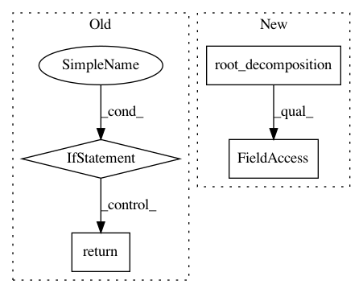

db830daee51fa17726524533da469fb91804b2a0,gpytorch/lazy/interpolated_lazy_variable.py,InterpolatedLazyVariable,root_decomposition,#InterpolatedLazyVariable#,349
Before Change
self.right_interp_values.repeat(*sizes), **self._kwargs)
def root_decomposition(self):
if isinstance(self.base_lazy_variable, RootLazyVariable):
interp_root = InterpolatedLazyVariable(self.base_lazy_variable.root, self.left_interp_indices,
self.left_interp_values)
return RootLazyVariable(interp_root)
else:
super(InterpolatedLazyVariable, self).root_decomposition()
def root_decomposition_size(self):
if isinstance(self.base_lazy_variable, RootLazyVariable):
return self.base_lazy_variable.root_decomposition_size()
else:
After Change
self.right_interp_values.repeat(*sizes), **self._kwargs)
def root_decomposition(self):
base_root_decomposition = self.base_lazy_variable.root_decomposition().root
root_interp_lazy_variable = self.__class__(base_root_decomposition, self.left_interp_indices,
self.left_interp_values)
return RootLazyVariable(root_interp_lazy_variable)
In pattern: SUPERPATTERN
Frequency: 3
Non-data size: 4
Instances
Project Name: cornellius-gp/gpytorch
Commit Name: db830daee51fa17726524533da469fb91804b2a0
Time: 2018-01-30
Author: gpleiss@gmail.com
File Name: gpytorch/lazy/interpolated_lazy_variable.py
Class Name: InterpolatedLazyVariable
Method Name: root_decomposition
Project Name: cornellius-gp/gpytorch
Commit Name: c62f2fbaffffd849d4ea837574e71c26077df29a
Time: 2019-01-23
Author: balandat@fb.com
File Name: gpytorch/lazy/block_diag_lazy_tensor.py
Class Name: BlockDiagLazyTensor
Method Name: root_decomposition
Project Name: cornellius-gp/gpytorch
Commit Name: 8c40ed8fb56baef7ab5ce8d5ed85bb10e4f09174
Time: 2020-12-16
Author: wjm363@nyu.edu
File Name: gpytorch/lazy/kronecker_product_lazy_tensor.py
Class Name: KroneckerProductLazyTensor
Method Name: root_decomposition